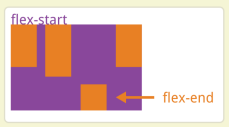

原文连接:https://www.cnblogs.com/rope/p/10692101.html
一、viewport视口
1.1什么是屏幕尺寸、屏幕分辨率、屏幕像素密度？
屏幕尺寸：指屏幕的对角线的长度，单位是英寸，常见的屏幕尺寸有3.5、3.7、4.2、4.7、5.0、5.5、6.0等。
屏幕分辨率：指在横纵向上的像素点数，单位是px，1px=1个像素点。一般以纵向像素*横向像素来表示一个手机的分辨率，如1920*1080。（这里的1像素指的是物理设备的1个像素点）
屏幕像素密度：屏幕上每英寸可以显示的像素点的数量，单位是ppi。屏幕像素密度与屏幕尺寸和屏幕分辨率有关，在单一变化条件下，屏幕尺寸越小、分辨率越高，像素密度越大，反之越小。
iPhone 3GS和iPhone 4对比。屏幕尺寸一样，屏幕分辨率相差一倍，屏幕像素密度也相差一倍。
计算像素密度的公式：
在早先的移动设备中，屏幕像素密度都比较低，如iphone3分辨率为320x480，在iphone3上，1像素是等于一个屏幕物理像素。后来随着技术的发展，移动设备的屏幕像素密度越来越高，从iphone4开始，苹果公司推出了Retina屏，分辨率提高了一倍，变成640x960，但屏幕尺寸却没变化，这就意味着同样大小的屏幕上，像素却多了一倍，这时，1像素是等于两个物理像素。
这是描述物理性质的一个数值，表示计算机屏幕横向有1366个像素发光点，纵向有768个像素点。
像素是构成数码影像的基本单元，通常以像素每英寸PPI为单位来表示影像分辨率大小。
上网的时候看网页，物理分辨率和网页呈递的效果，息息相关。
对于同一个网页，不更改字号的情况，分辨率越大，同样字号看着越小。
把计算机分辨率调大，设为1366*768，此时网页旁边的留白很多。
如果这个事，在手机上也是遵循同样的规则，那坏了，手机屏幕的分辨率，惊人的大。
|
iPhone8的分辨率1334*750 iPhone8 Plus分辨率1920*1080 三星S8的分辨率2960*1440 小米6的分辨率1920*1080 |
做一个网页，页面上放一个1000px的盒子，放置了h1和p，都是默认字号，会发现h1哪像h1啊？
写一个测试语句：手机认为自己的屏幕宽度是980px，注意这个数值，不是分辨率。
|
document.getElementsByTagName('h2')[0].innerHTML=document.documentElement.clientWidth; |
现在，这个980是什么？为什么不是手机的分辨率，这是默认视口的宽度。
视口（viewport）是手机web制作非常重要的概念，发明人是乔布斯，乔布斯预见到一件事，就是手机的屏幕会越来越清晰，PPI（每平方英寸的像素数，像素密度）会越来越大。此时如果手机按照自己的分辨率去渲染网页，页面上的文字将不可读，20px的文字看不清。所以，手机不能认为自己的宽度是自己的分辨率！乔布斯说，每个手机可以由工程师自由的设置“显示分辨率”，起名叫“视口”。也就是说，手机在视口中呈递页面，而不是分辨率的物理窗口。视口中1px等于真实物理的多个px。乔布斯说，默认视口980px，因为980px是实世界上绝大多数网页的版心。此时刚刚好能够卡住它们，像在3000米的高空俯视整个页面。但是，乔布斯还说，前端工程师必须能够自己设置。
写一个meta标签：此时手机认为自己的视口是device-width（当前设备）的视口宽度
|
<meta name="viewport" content="width=device-width, user-scalable=no, initial-scale=1.0, maximum-scale=1.0, minimum-scale=1.0" /> width 设置layout viewport 的宽度，为一个正整数，或字符串"device-width" initial-scale 设置页面的初始缩放值，为一个数字，可以带小数 minimum-scale 允许用户的最小缩放值，为一个数字，可以带小数 maximum-scale 允许用户的最大缩放值，为一个数字，可以带小数 height 设置layout viewport 的高度，这个属性对我们并不重要，很少使用 user-scalable 是否允许用户进行缩放，值为"no"或"yes", no 代表不允许，yes代表允许||IOS10 无效 |
此时手机会认为自己的视口是500px宽，称这条语句“约束视口”
|
<meta name="viewport" content="width=500px, user-scalable=no, initial-scale=1.0" /> |
此时页面文字变大了。
小米屏幕的物理分辨率横向1080个像素，而现在手机认为自己是500px的宽度，所以一个视口px等于2.16真实px。
把所有设备都约束为固定的视口宽度，不合理！比如小米6的分辨率是1080，约束为500。iPhone8的分辨率750，页面约束为500，此时iPhone8的视口分辨率1px等于真实分辨率1.5px，加上iPhone8手机本来就小，iPhone8中的h1看的感觉要比小米6小，所以iPhone8应该认为自己有更小的视口，比如360，可以增加点视口，此时大家的h1不都一样了吗？
乔布斯规定，所有的手机出厂的时候，就有一个设备的补偿视口宽度。叫做“出厂视口”，此时这个设备将在出厂的时候写入一个视口宽度，这个宽度下看网页，h1和h1感觉一致
|
出厂视口 |
品牌 |
|
320 |
iPhone4、iPhone5 |
|
360 |
华为P9，小米5、6等等 中国国产的手机一律都是360，实际上不合理。 |
|
375 |
iPhone6、iPhone7、iPhone8 |
|
414 |
iPhone6 plus、iPhone7 plus、iPhone8 plus |
完整的meta设置：
<meta name="viewport" content="width=device-width, initial-scale=1.0, minimum-scale=1.0, maximum-scale=1.0,user-scalable=no" id="viewport" />
视口的值不要背，面试的时候也不用考，因为视口就是为了屏蔽手机和手机的不同而设置的值。视口的值，每个手机不一样，正是因为手机和手机视口值不一样，才让手机看到的14px文字的感觉是一样的。
视口的最终目的：屏蔽手机的尺寸、像素密度差异，让任何手机中的文字看起来一样大。
当你不写meta的时候，此时视口980。写了就是出场视口。就是320、360、414等等…… 永远都得不到分辨率。
1.2物理像素和设备独立像素
window对象有一个devicePixelRatio属性，它可以得到设备物理像素和设备独立像素的比例，也就是 devicePixelRatio = 物理像素 / 独立像素。
CSS中的px就可以看作是设备的独立像素，所以通过devicePixelRatio可以知道该设备1px代表多少个物理像素。例如，在Retina屏的iphone上，devicePixelRatio值为2，也就是说1px相当于2个物理像素。
iPhone6屏幕分辨率是1334*750px，所以系数是2x。那device-width就等于750/2=375px。
iPhone6 Plus屏幕分辨率是2208*1242px，所以系数是3x。那device-width就等于1242/3=414px。
二、移动端百分比布局
2.1移动端页面没有版心
手机web页面没有版心，都是撑满的，因为：
1、手机本身就小，如果再留白，寸土寸金的地方就浪费
2、APP也是撑满的，用户手机上网的时候，也希望能看到更多的内容，所以撑满。
|
|
|
|
|
此时没有版心，都是100%，就会给制作带来难度，因为尺寸不能写px单位了，如果版心设置为360px，此时iPhone7 plus的414视口会看见留白。
|
|
|
2.2百分比布局
用百分比布局设置宽度、高度（绝大多数高度可以用px）、padding、margin的布局。叫做流式布局，页面有弹性，所以也叫弹性布局：
|
|
|
|
下面讲解基本功：
|
<body> <div></div> → div是body的亲儿子，60%指的是窗口宽度的60% </body> |
|
<body> <div> <p></p> → 60%指的是div的width的60%，无视div的padding。 </div> </body> |
小题目：
|
<div> <p></p> </div> div{width:600px;padding-left:100px;} p{width:50%;} |
请问p多宽？此时p应该是300px宽度，因为无视父亲的padding。
看看padding，都参考父亲的width。注意，竖直方向上的padding也是看父亲的width，而不是height。
|
<div> <p></p> → padding-left:10%;指的是父亲的width的10%，而不是父亲的padding。 padding-top:10%;指的是父亲的width的10%，而不是父亲的height。 </div> |
小题目：
<div>
<p></p>
</div>
div{
width:800px;
padding-left:400px;
padding:153px 234px 341px;
}
p{
width:50%;
height:100px;
padding-left:10%;
paading-right:10%;
padding-top:10%;
padding-bottom:10%;
}请画出p此时的盒模型图。
div的padding是逗你的，因为压根没用，儿子的padding-left如果用百分比写，表示的仍然是父亲的width属性的百分之多少。儿子的padding-top和padding-bottom也是参考父亲的width，所以答案：
小题目：
|
<div> <p></p> <p></p> </div> |
div{
width: 794px;
height: 200px;
border: 1px solid #000;
padding: 124px 34px 34px 23px;
}
p:nth-child(1){
float: left;
width: 30%;
padding: 10% 20% 30%;
height: 50px;
background-color: orange;
}
p:nth-child(2){
float: left;
width: 30%;
height: 50px;
background-color: blue;
} 请问蓝色盒子和橙色盒子是否能够浮动成功，是否能够并排显示。
答案： 计算1号p，总宽度是30% + 20% + 20% = 70%。 2号p总宽度30%，刚好能并排。
再来看margin，一律参考父亲width，不参考父亲的margin和height。
div{
width: 200px;
height: 600px;
border: 10% solid #000;
}
p{ margin: 10%;}总结：无论margin、padding、width，无论竖直方向还是水平方向，参考的都是父亲的width。
2.3 calc()函数
calc()的运算规则
calc()使用通用的数学运算规则，但是也提供更智能的功能：
使用“+”、“-”、“*” 和 “/”四则运算；
可以使用百分比、px、em、rem等单位；
可以混合使用各种单位进行计算；
表达式中有“+”和“-”时，其前后必须要有空格，如"widht: calc(12%+5em)"这种没有空格的写法是错误的；
表达式中有“*”和“/”时，其前后可以没有空格，但建议留有空格。
border不能用百分比写。所以会带来麻烦：
|
border: 10% solid #000; |
|
<div> <p>1</p> float: left;width:50%; border:1px solid red <p>2</p> float: left;width:50%; border:1px solid red </div> |
p就不能浮动成功，因为总宽度已经是100%，又多了4个px。
此时边框不能写成百分百，所以就不好减。
div{
width: 500px;
height: 300px;
background: orange;
}
div p{
width: 50% /*这里不能轻松减去2px*/
height: 200px;
float: left;
background: green;
border:1px solid #000;
}
但是CSS3中新增的calc函数能：
div{
width: 500px;
height: 300px;
background: orange;
}
div p{
width: calc(50% - 2px); /*css3中新增了calc函数*/
height: 200px;
float: left;
background: green;
border:1px solid #000;
}
使用的时候一定要在运算符前后加上空格：
|
calc(50%-2px); |
正确的应该是：
|
calc(50% - 2px); |
对于兼容性不好的浏览器，要加前缀：
|
width:-moz-calc(100% - (10px + 5px) * 2); width:-webkit-calc(100% - (10px + 5px) * 2); width:calc(100% - (10px + 5px) * 2); |
兼容性不好，至少安卓4.4还不是特别兼容。
2.4 CSS3新的盒模型（盒子內减）
之前的盒模型padding、border、都是外扩的。
在CSS3中新添加一个属性box-sizing:border-box;盒子最终的大小都是以width和height为准，padding和border不会影响盒子大小。
|
box-sizing:border-box; 盒子內减模式 |
div{
width: 200px;
height: 200px;
padding:10px 20px 30px 40px;
border:10px solid #ccc;
background: orange;
}
此时真实的面积：280*260
div{
width: 200px;
height: 200px;
padding:10px 20px 30px 40px;
border:10px solid #ccc;
background: orange;
box-sizing:border-box;
}加上內减属性后，此时padding和border是內减的，而不是外扩。
小题目：
|
<div> <p></p> <p></p> </div> |
两个p能否并排：
div{
width: 800px;
height: 300px;
border: 1px solid #000;
}
p:nth-child(1){
float: left;
width: 500px;
height: 300px;
background: blue;
padding: 21px 33px 44px 11px;
box-sizing:border-box; → width：500px涵盖了padding和border了
border:3px solid red;
border-right:4px solid black;
}
p:nth-child(2){
float: left;
width: 300px;
height: 300px;
background: orange;
padding: 14px 22px 17px 21px;
box-sizing:border-box; → width：300px涵盖了padding和border了
border:5px solid red;
border-right:4px solid black;
}
小案例：响应布局
div{
width:80%;
height:100px;
margin:0 auto;
background-color:#111;
padding:10px;
padding-right:0px;
}
div p{
float: left;
width:33.3333333%;
height:100px;
background-color:deeppink;
border-right:10px solid #111;
box-sizing:border-box;
}
小题目：div里面一个p
div{
width:600px;
height: 200px;
padding:50px;
box-sizing:border-box;
}
p{width:50%;height: 200px;}P的宽度是250px因为父亲有box-sizing:border-box;属性，內减了padding:50px，儿子参考的是父亲真实能用的面积的百分比（500px）.
2.5最大和最小限定
|
width:80%; max-width:800px; /*限定最大缩放宽度为800*/ min-width:400px; /*限定最小缩放宽度为400*/ |
超过这个范围，百分百就不再缩放了。
2.6固比固
思考一个案例：有三个盒子并排撑满父亲，两边的盒子固定120px，中间的盒子撑满剩余部分。
难点就是中间的盒子百分百，写啥都不对，因为它不知道去掉240px之后，占父亲多少百分比。
|
width:calc(100% - 240px); |
三、高度的等比变化
难度主要在参考值不统一，width参考是父亲的width，height参考父亲的height。
3.1插入图片法
一般来说，需要高度等比例变化的盒子，都是携带图片的，因为不希望图片变形，所以盒子要等比例变化。
而img标签天生具有等比例的性质。盒子约束图片的宽度，图片反着影响盒子的高度。
比如现在要制作三个1:1:1的盒子并排，并且他们的宽高比都是1:1，也就是正方形。
<div> → width:80%; overflow:hidden; padding-left:5px;
<p> → float:left;width:33.33%;border-right: 5px
<img src="images/yangyang.png" > → width:100%;height:auto;
</p>
<p> → float:left;width:33.33%;border-right: 5px
<img src="images/liyifeng.png"> → width:100%;height:auto;
</p>
<p> → float:left;width:33.33%;border-right: 5px
<img src="images/xiaoming.png"> → width:100%;height:auto;
</p>
</div>div{
width: 80%;
margin: 0 auto;
border: 1px solid #000;
overflow: hidden;
padding-left: 6px;
box-sizing:border-box;
}
div p{
float: left;
width: 33.3333%;
border-right: 6px solid white;
box-sizing:border-box;
}
div p img{
width: 100%;
height: auto;
}现在升级：
div p:nth-child(1){
width: 66.666%;
border-right: 1px solid black;
}
div p:nth-child(2){
width: 33.333%;
border-bottom: 1px solid black;
}
div p:nth-child(3){
width: 33.333%;
}图片撑高了盒子，盒子本身没有高度，盒子的高度相当于是图片的高度加1px边框，即使写了border-box也没用也是图片的高度加1px边框。
3.2 padding法将图片放在padding里面
竖直方向的padding参考的是父亲的width，padding的参考和width的参考统一了，所以就能够制作高度等比例变化的盒子了！
盒子的高度是0，全靠padding来撑！
比如制作三个并排，每个盒子宽高比1:1的盒子此时：
|
float: left; width: 33.333%; height: 0px; padding-top: 33.333%; |
比如制作五个并排，每个盒子宽高比2:1的盒子此时
|
float: left; width: 20%; padding-top: 10%; height: 0px; |
padding法也可以插img，但是img要在height为0的容器中，所以img必须绝对定位，飘在父亲的padding中。
div p{
float: left;
width: 33.333%;
padding-top: 33.333%;
height: 0px;
border-right: 1px solid #000;
box-sizing:border-box;
position: relative;
}
div p img{
position: absolute;
top: 0;
left: 0;
width: 100%;
height: 100%;
}
升级：
div{
width: 80%;
overflow: hidden;
border: 1px solid #000;
margin:10px auto;
}
div p:nth-of-type(1){
width: 66.666%;
padding-top: calc(66.6666% + 10px);
border-right:5px solid #000;
}
div p:nth-of-type(2){ border-bottom:10px solid #000;}
div p{
float: left;
height:0;
width: 33.333%;
padding-top:33.3333%;
box-sizing:border-box;
position: relative;
}
div p img{
position: absolute;
top:0;
left:0;
width: 100%;
height: 100%;
}四、CSS3弹性盒模型
4.1弹性盒布局属性display:box;和display:flex;
注意：设为flex布局后，子元素的float、clear、vertical-align属性将失效。
需求：让三个盒子并排，撑满父亲，而且它们的宽度是1:2:3，此时一个专门设置width？
解：总份数1+2+3等于6，所以一份就是100/6 = 16.6666%，所以应该：16.6666%、33.3333%、50%
再来一个盒子，四个盒子并排撑满父亲，比例是：1:2:6:3
解：总份数是12，是一样一份是8.333333333333334.答案：8.3333%、16.66%、50%、25%
CSS3中新推出一个属性，弹性盒容器：
|
display:box; display:-webkit-box; |
<div> → display:-webkit-box; 此时这个div就是弹性盒容器，里面的亲儿子自动浮动
<p>1</p> → -webkit-box-flex:1; 占1份
<p>2</p> → -webkit-box-flex:2; 占2份
<p>3</p> → -webkit-box-flex:6; 占6份
<p>4</p> → -webkit-box-flex:3; 占3份
</div>注意：当div设置display:box;的时候，儿子自动会并排，儿子不要写浮动，写了反而出错。
浏览器会自动检测总份数，每个份数占多少百分比，不用计算百分比是多少，这个属性能颠覆百分比的写法。
CSS中从此可以不写百分比，并且这个属性足够鲁棒，margin和padding、border也能自动减去。
但是这个属性兼容性不好，因为是新出的属性，安卓4.4才开始兼容。
实际上这个属性还要一个分支，就是display:flex;
要加前缀：这个属性的哲学就是可以自由的设置元素在容器中的排列形式。
|
display:flex; display:-webkit-flex; |
兼容写法：
|
display:box; display:-webkit-box; display:flex; display:-webkit-flex; |
基本使用：
<div> → display:flex;
<p>A</p> → flex:1; 不要写浮动！！
<p>B</p> → flex:2; 不要写浮动！！
<p>C</p> → flex:2; 不要写浮动！！
<p>D</p> → flex:1; 不要写浮动！！
</div>4.2父级容器属性
●flex-direction属性
该属性可以设置方向（即子项目的排列方向）。
|
.box { flex-direction: row | row-reverse | column | column-reverse; } |
|
1 row（默认值）：主轴为水平方向，起点在左端。 2 row-reverse：主轴为水平方向，起点在右端。 3 column：主轴为垂直方向，起点在上沿向下。 4 column-reverse：主轴为垂直方向，起点在下沿向上。 |

div{
width: 800px;
height: 400px;
margin:10px auto;
border: 1px solid #000;
display:flex;
flex-direction:row-reverse;
}
●flex-wrap属性
默认情况，项目都排在一条线（又称“轴线”）上。flex-wrap属性定义，如果一条轴线排不下，如何换行。
|
.box{ flex-wrap: nowrap | wrap | wrap-reverse; } |
|
1 nowrap（默认）：不换行。 2 wrap：换行，第一行在上方。 3 wrap-reverse：换行，第一行在下方。 |
●flex-flow属性
flex-flow属性是flex-direction属性和flex-wrap属性的简写形式，默认值为row nowrap。
|
.box { flex-flow: <flex-direction> || <flex-wrap>; } |
|
flex-flow:row-reverse wrap; |
●justify-content属性
justify-content属性定义了项目在主轴上的对齐方式
|
.box { justify-content: flex-start | flex-end | center | space-between | space-around; } |
它可能取5个值，具体对齐方式与轴的方向有关。下面假设主轴为从左到右。
|
1 flex-start（默认值）：左对齐 2 flex-end：右对齐 3 center： 居中 4 space-between：两端对齐，项目之间的间隔都相等。 5 space-around：每个项目两侧的间隔相等。所以，项目之间的间隔比项目与边框的间隔大一倍。 |
●align-items属性
align-items属性定义项目在交叉轴上如何对齐。
|
.box { align-items: flex-start | flex-end | center | baseline | stretch; } |
它可能取5个值。具体的对齐方式与交叉轴的方向有关，下面假设交叉轴从上到下。
|
1 flex-start：交叉轴的起点对齐。 2 flex-end：交叉轴的终点对齐。 3 center：交叉轴的中点对齐。 4 baseline: 项目的第一行文字的基线对齐。 5 stretch（默认值）：如果项目未设置高度或设为auto，将占满整个容器的高度。 |

●align-content属性
align-content属性定义了多根轴线的对齐方式。如果项目只有一根轴线，该属性不起作用。
|
.box { align-content: flex-start | flex-end | center | space-between | space-around | stretch; } |
|
1 flex-start：与交叉轴的起点对齐。 2 flex-end：与交叉轴的终点对齐。 3 center：与交叉轴的中点对齐。 4 space-between：与交叉轴两端对齐，轴线之间的间隔平均分布。 5 space-around：每根轴线两侧的间隔都相等。所以，轴线之间的间隔比轴线与边框的间隔大一倍。 6 stretch（默认值）：轴线占满整个交叉轴。 |
4.3子级项目属性
●order属性
order属性定义项目的排列顺序。数值越小，排列越靠前，默认为0。
|
.item { order:1; } |
●flex-grow属性
flex-grow属性定义项目的放大比例，默认为0，即如果存在剩余空间，也不放大。
如果所有项目的flex-grow属性为1，则它们将等分剩余空间（如果有的话）。
如果一个项目的flex-grow属性为2，其他项目都为1，则前者占据的剩余空间将比其他项多一倍。
|
.item { flex-grow: <number>; /* default 0 */ } |
●flex-shrink属性
flex-shrink属性定义了项目的缩小比例，默认为1，即如果空间不足，该项目将缩小。
如果所有项目的flex-shrink属性都为1，当空间不足时，都将等比例缩小。如果一个项目的flex-shrink属性为0，其他项目都为1，则空间不足时，前者不缩小。(数值越大压缩的越厉害)
|
.item { flex-shrink: <number>; /* default 1 */ } |
●flex-basis属性
flex-basis属性定义了在分配多余空间之前，项目占据的主轴空间（main size）。浏览器根据这个属性，计算主轴是否有多余空间。它的默认值为auto，即项目的本来大小。它可以设为跟width或height属性一样的值（比如350px），则项目将占据固定空间。
|
.item { flex-basis: <length> | auto; /* default auto */ } |
●flex属性
flex属性是flex-grow, flex-shrink 和 flex-basis的简写，默认值为0 1 auto。后两个属性可选。
|
.item { flex: none | [ <'flex-grow'> <'flex-shrink'>? || <'flex-basis'> ] } |
|
.item { flex: 1//平分剩余的部分 } |
该属性有两个快捷值：auto (1 1 auto) 和 none (0 0 auto)。
建议优先使用这个属性，而不是单独写三个分离的属性，因为浏览器会推算相关值。
●align-self属性
align-self属性允许单个项目有与其他项目不一样的对齐方式，可覆盖align-items属性。默认值为auto，表示继承父元素的align-items属性，如果没有父元素，则等同于stretch。
该属性可能取6个值，除了auto，其他都与align-items属性完全一致。
|
.item { align-self: auto | flex-start | flex-end | center | baseline | stretch; } |

4.4多行文字溢出自动显示的省略号
/*溢出隐藏*/
overflow: hidden;
/*溢出显示省略号*/
text-overflow:ellipsis;
/*必须是弹性盒模型*/
display:-webkit-box;
/*设置行数是5行*/
-webkit-line-clamp:5;
/*垂直排列*/
-webkit-box-orient:vertical;五、rem单位
注意：浏览器默认的字号大小是16px。
em是相对单位，相对于父亲的字号的多少倍。
em是相对单位，相对于父亲的字号的多少倍。
|
<div> → 字号20px <p></p> → 字号2em ， 也就是字号40px </div> |
em是相对单位，比如下面的div、p都设置2em，表示的字号却不一样大：
|
<body> → 字号20px 文字 <div> → 字号2em ， 也就是字号40px 文字 <div>文字</div> → 字号2em ， 也就是字号80px </div> </body> |
CSS3中新增了rem单位，是相对单位，相对于html根元素的字号大小的多少倍。
rem被中国人开发出来可以做移动端，方法就是用rem写一切的单位，多用于移动端布局。
rem使盒子能够有弹性的感觉，原理：屏幕宽度是设计稿的多少倍，就要设置html字号基准字号是多少倍
|
html{ font-size:75px; } |
这个数值一旦确定了，不要轻易改，因为后面所有的数值都以这个75px基准来算rem的值。
动态设置视口和rem单位
var dpr = 1 / window.devicePixelRatio;
document.write('<meta name="viewport" content="width=device-width, user-scalable=no, initial-scale='+dpr+'" />');
var W = document.documentElement.clientWidth / 10;
document.getElementsByTagName('html')[0].style.fontSize = W + 'px';六、手机web制作其他事项
6.1移动端的字体
移动端web中的字体，不用去设置，移动端的字体都会自动根据当前设备的系统进行替换，比如iPhone手机会自动换成苹方字体，安卓系统会使用思源。
6.2移动端常用meta和link
http://blog.csdn.net/faremax/article/details/70241877
6.3图片
手机中的图片一般都要缩小2倍~3倍使用，这样可以充分利用手机的高清屏幕，让图片更清晰。比如，上屏幕的图片是60*60，原图就要有120*120以上。
因为视口比如360，真实手机分辨率是1080，大约2~3倍。也就是说你的视口1px，实际物理像素2~3个像素点，所以图片能够显示更清晰。
当你现在的盒子高度是固定尺寸的，并不需要等比例变化，此时精灵图片一般都是用到的尺寸2.0倍，这是为了好算。
七、fillpage.js
使用说明：
①引入插件文件，这个插件依赖于jQuery，所以你还需要下载jQuery，并且在Fullpage插件之前引入。
<link rel="stylesheet" type="text/css" href="/fullpage/jquery.fullPage.css" />
<script src="/fullpage/jquery.min.js"></script>
<script type="text/javascript" src="/fullpage/jquery.fullPage.js"></script>如果你需要自定义页面滚动的效果，你需要引入jquery.easings.min.js文件。
|
<script src="/fullpage/jquery.easings.min.js"></script> |
②编写HTML代码
<div id="fullpage'">
<div class="section">Some section</div>
<div class="section">Some section</div>
<div class="section">Some section</div>
<div class="section">Some section</div>
</div>假如你需要让某一个section作为首页的第一屏展示，你只需要给这个section添加一个active的类，Fullpage会自动优先展示这个屏幕，例如定义下面的代码：
|
<div class="section active">Some section</div> |
Fullpage自带左右滑动的幻灯片，只需要在section中添加DIV元素，并且给DIV元素添加slide类，FUllpage会自动生成幻灯片特效，例如下面的代码：
<div class="section">
<div class="slide"> Slide 1 </div>
<div class="slide"> Slide 2 </div>
<div class="slide"> Slide 3 </div>
<div class="slide"> Slide 4 </div>
</div>
③初始化Fullpage
使用jQuery的文档加载完毕以后执行函数，初始化Fullpage插件。
|
$(document).ready(function() { $('#fullpage').fullpage(); }); |
八、注意事项
移动端初始化meta：
<meta name="viewport" content="width=device-width, initial-scale=1" id="viewport" />
<!-- 是否启动webapp功能，会删除默认的苹果工具栏和菜单栏。 -->
<meta name="apple-mobile-web-app-capable" content="yes" />
<!-- 这个主要是根据实际的页面设计的主体色为搭配来进行设置。 -->
<meta name="apple-mobile-web-app-status-bar-style" content="black" />
<!-- 忽略页面中的数字识别为电话号码,email识别 -->
<meta name="format-detection" content="telephone=no, email=no" />
<!-- 启用360浏览器的极速模式(webkit) -->
<meta name="renderer" content="webkit">
<!-- 避免IE使用兼容模式 -->
<meta http-equiv="X-UA-Compatible" content="IE=edge">
<!-- 针对手持设备优化，主要是针对一些老的不识别viewport的浏览器，比如黑莓 -->
<meta name="HandheldFriendly" content="true">
<!-- 微软的老式浏览器 -->
<meta name="MobileOptimized" content="320">
<!-- uc强制竖屏 -->
<meta name="screen-orientation" content="portrait">
<!-- QQ强制竖屏 -->
<meta name="x5-orientation" content="portrait">
<!-- UC强制全屏 -->
<meta name="full-screen" content="yes">
<!-- QQ强制全屏 -->
<meta name="x5-fullscreen" content="true">
<!-- UC应用模式 -->
<meta name="browsermode" content="application">
<!-- QQ应用模式 -->
<meta name="x5-page-mode" content="app">移动端注意事项：
1、样式初始化要使用移动端初始化。
2、无需设置字体成微软雅黑或平方，因为每个手机系统的字体都不同。
3、盒子水平方向的尽量都使用宽度百分比布局。
4、并列模块中间的边框，尽量用伪标签，并且定位。
5、移动端网页一定要有视口标签。（我们通过JS创建）
Safari(还有些webkit android手机浏览器)会自动对看起来像是电话号码的数字串（包括已经加入连字符或括号格式化过的）添加电话链接，点击之后会询问用户是否想要拨打该号码。
如需要
<a href="tel:12345678901">电话</a>
<a href="mailto:978442663@qq.com">邮箱</a>